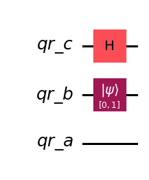
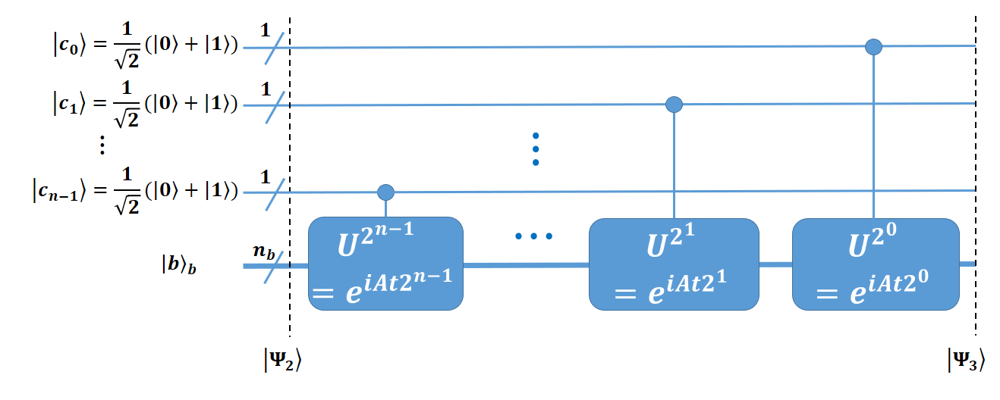
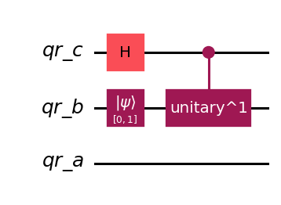
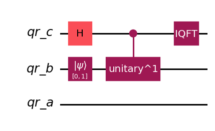

Code
N_b = 2 # number of variables (b.shape[0])
n_b = int(np.log2(N_b)) # number of qubits in b-register
# n_b = 1 # N_b = 2^(n_b), n_b = np.log2(N_b)
n_c = 1 # number of qubits in c-register
N_c = 2 # N_c = 2^(n_c)
t = np.pi/8This document provides a step-by-step implementation of the HHL algorithm using Qiskit. The algorithm is broken into four key phases:
\(A=\begin{bmatrix}1 & -\frac{1}{3}\\-\frac{1}{3} & 1\end{bmatrix}\)
\(\vec{b}=\begin{bmatrix}0\\1\end{bmatrix}\)
\(n_b\): # of qubits in b-register
\(N_b=2^{n_b}\): # of unknows (length of \(\vec{b}\), \(len(\vec{b})=len(\vec{x})\))
\(n_c\): # of qubits in c-register
a larger \(n_c\) results in higher accuracy when the encoding is not exact
\(N=2^n\)
\(t=\frac{\pi}{8}\): time variable, choose \(t\) such that \(\tilde{\lambda_j}=\frac{\lambda_jt}{2\pi}\) is an integer
N_b = 2 # number of variables (b.shape[0])
n_b = int(np.log2(N_b)) # number of qubits in b-register
# n_b = 1 # N_b = 2^(n_b), n_b = np.log2(N_b)
n_c = 1 # number of qubits in c-register
N_c = 2 # N_c = 2^(n_c)
t = np.pi/8The Goal for this phase is to estimate the eigenvalues of given Matrix.
c-register) through Hadamard gates\[ \begin{align} |\psi_2\rangle &= I^{\otimes n_b}\otimes H^{\otimes n}\otimes I |\psi_1\rangle \\ &= |b\rangle\frac{1}{2^\frac{n}{2}}(|0\rangle+|1\rangle)^{\otimes n}|0\rangle \\ &= |b\rangle\frac{1}{\sqrt2 ^n}(|0\rangle+|1\rangle)^{\otimes n}|0\rangle \end{align} \]
其实就是每个state in c-register 都apply Hadamard gate (变成\(\frac{1}{\sqrt2}(|0\rangle+|1\rangle)\)) \(\frac{1}{\sqrt2 ^ n}\) 是因为\(H^{\otimes n_c}|0\dots0\rangle_c\)
mat_A = np.array([[1, -1/3], [-1/3, 1]])
vec_b = np.array([0,1])
psi_1, qr_b, qr_c, qr_a = state_prep(mat_A, vec_b, n_c=1)
psi_2 = psi_1.copy()
psi_2.h(qr_c)
psi_2.draw(output='mpl')
Apply the control-\(U\) operation such that the eigenvalues of A would be stored in register-C. \[
U = e^{iAt}
\] Where \(t\) is the time. E.g. a state \(|\psi\rangle\) would be \(e^{iAt}|\psi\rangle\) after time \(t\).
We want to apply the control-\(U\) operation such that \(U|b\rangle = e^{2\pi i \phi}|b\rangle\), where \(e^{2\pi i \phi}\) is the eigenvalue of A (\(A|\phi\rangle=e^{2\pi i \phi}|\phi\rangle\)), esitmated from \(U^{2r}, U=e^{iAt}\). Where \(r\) is the index of the clock qubit (c-register).

When the control clock qubit is \(|0\rangle\), \(|b\rangle\) will not be affected. If the clock bit is \(|1\rangle\), \(U\) will be applied to \(|b\rangle\). This is equivalent to multiplying \(e^{2\pi i \phi 2^j}\) in front of the \(|1\rangle\) of the j-th clock qubit \(|c_j\rangle\). (notice the \(U^{2^r}\) and \(U^k\) ahead, here \(2j=2r\) or \(2j=k\))
after controlled-\(U\) operation, we have \[ |\psi_3\rangle=|b\rangle\otimes\frac{1}{\sqrt2 ^n}~~~(|0\rangle+e^{2\pi i \phi 2^{n-1}}|1\rangle)\otimes(|0\rangle+e^{2\pi i \phi 2^{n-2}}|1\rangle)\otimes\dots~~~\otimes(|0\rangle+e^{2\pi i \phi 2^{0}}|1\rangle)\otimes|0\rangle_a \] \[ |\psi_3\rangle=|b\rangle \frac{1}{\sqrt2 ^n}\sum\limits^{2^{n}-1}_{k=0}e^{2\pi i \phi k}|k\rangle |0\rangle_a \]
U = expm(1j * t * mat_A)
U_gate = UnitaryGate(U, label="e^\{iAt\}")
controlled_U = U_gate.control(1) # controled gate by |1⟩
psi_3 = psi_2.copy()
for j in range(n_c):
power = 2**j # U^{2^j}
controlled_U_pow = U_gate.power(power).control(1) # 计算 U^{2^j} 并加控制
psi_3.append(controlled_U_pow, [qr_c[j], *qr_b])
psi_3.draw(output='mpl')<>:2: SyntaxWarning: invalid escape sequence '\{'
<>:2: SyntaxWarning: invalid escape sequence '\{'
C:\Users\14637\AppData\Local\Temp\ipykernel_10548\1679404321.py:2: SyntaxWarning: invalid escape sequence '\{'
U_gate = UnitaryGate(U, label="e^\{iAt\}")
Apply IQFT, only clock qubits (c-register) are affected.
\[ \begin{align} |\psi_4\rangle &= |b\rangle\text{IQFT}(\frac{1}{\sqrt2 ^n}\sum\limits^{2^{n}-1}_{k=0})|0\rangle_a\\ &=|b\rangle\frac{1}{\sqrt2 ^n}\sum\limits^{2^n-1}_{k=0}e^{2\pi i \phi k}(\text{IQFT}|k\rangle)|0\rangle_a\\ &=|b\rangle\frac{1}{\sqrt2 ^n}\sum\limits^{2^n-1}_{k=0}e^{2\pi i \phi k}(\sum\limits^{2^n-1}_{y=0}e^{-2\pi iyk/N}|y\rangle)|0\rangle_a\\ &=\frac{1}{\sqrt2 ^n}|b\rangle\sum\limits^{2^n-1}_{y=0}\sum\limits^{2^n-1}_{k=0}e^{2\pi i k (\phi-y/N)}|y\rangle|0\rangle_a \end{align} \]
only \(|y\rangle\) satisfying the condition \(\phi-y/N=0\) will have a finite amplitude of \(\sum\limits^{2^n-1}_{k=0}e^0=2^n\) otherwise the amplitude is \(\sum\limits^{2^n-1}_{k=0}e^{2\pi ik(\phi-y/N)}=0\). After ignoring the states of zero amplitude
\[\begin{align} |\psi_4\rangle&=\frac{1}{\sqrt2 ^n}|b\rangle\sum\limits^{2^n-1}_{k=0}e^{2\pi ik.0}|N\phi\rangle|0\rangle_a\\ &=|b\rangle|N\phi\rangle|0\rangle_a \end{align} \]
Therefore, in QPE, the clock qubits are used to represent the phase information of \(U\), which is \(\phi\), and the accuracy depends on the number of qubits, \(n\).
To understand why the c-register is called the clock qubits and the meaning of t better, it is worth noting that the Hamiltonian of a system in quantum mechanics determines how a system evolves through the following equation,\(U=e^{iAt}\), and \(t\) can be treated as the evolution time for that Hamiltonian.
\(U\) is also diagonal in \(A\)′s eigenvector, \(|u_i\rangle\), basis. If \(|b\rangle=|u_j\rangle\).\(U|b\rangle=e^{i\lambda_jt}|u_j\rangle\).
let \(i\lambda_jt=2\pi i \phi\), we get \(\phi=\frac{\lambda_j t}{2\pi}\), and \[ |\psi_4\rangle=|u_j\rangle|\frac{N\lambda_jt}{2\pi}|0\rangle_a \]
So far, we have assumed that \(|b\rangle\) is an eigenvector of \(U\),\(|u_j\rangle\). In general, \(|b\rangle\) can be expressed as a superposition of \(|u_j\rangle\). \[ |\phi_4\rangle=\sum\limits^{2^{n_b}-1}_{j=0}|b_j\rangle|u_j\rangle|\frac{N\lambda_jt}{2\pi}|0\rangle_a \]
choose \(t\) so that \(\tilde{\lambda_j}=\frac{N\lambda_jt}{2\pi}\) are integers, therefore, \(\tilde{\lambda_j}\) are usually scale of \(\lambda_j\)
\(|\psi_4\rangle=\sum\limits^{2^{n_b}-1}_{j=0}b_j|u_j\rangle|\tilde{\lambda_j}|0\rangle_a\)
iqft = QFT(num_qubits=n_c, do_swaps=False).inverse() # 创建 IQFT 门
psi_4 = psi_3.copy()
psi_4.append(iqft, qr_c) # 作用在 c-register 上
psi_4.draw(output='mpl')
def phase_estimation(qc, qr_b, qr_c, mat_A, t):
n_c = len(qr_c)
# 1. Hadamard on c-register
qc.h(qr_c)
# 2. Apply controlled-U^(2^j) operations
U = expm(1j * t * mat_A) # 计算 e^(iAt)
U_gate = UnitaryGate(U, label="e^{iAt}") # 创建 U gate
for j in range(n_c):
power = 2**j # 计算 U^(2^j)
controlled_U_pow = U_gate.power(power).control(1) # 控制操作
qc.append(controlled_U_pow, [qr_c[j], *qr_b])
# 3. Apply IQFT on c-register
iqft = QFT(num_qubits=n_c, do_swaps=False).inverse()
qc.append(iqft, qr_c) # 作用于 c-register
return qc
mat_A = np.array([[1, -1/3], [-1/3, 1]])
vec_b = np.array([0,1])
t = np.pi/8
psi_1, qr_b, qr_c, qr_a = state_prep(mat_A, vec_b, n_c=1)
psi_4 = phase_estimation(psi_1, qr_b, qr_c, mat_A, t)
psi_4.draw(output='mpl')
prev State Preparation
next step is Controlled Rotation